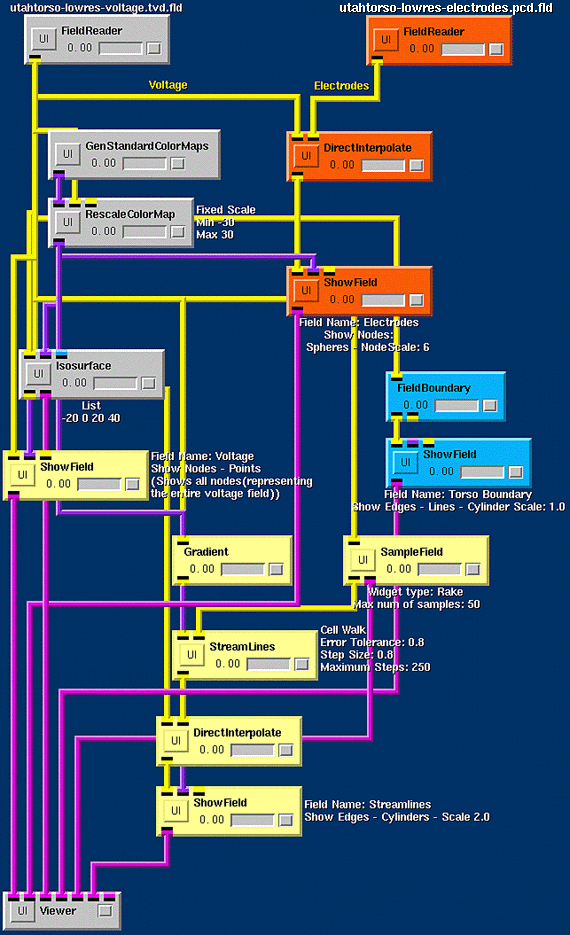

|
Chapter Overview Chapter three demonstrates the construction of three networks to visualize the utahtorso-lowres-voltage dataset. This chapter, demonstrates how to merge the three networks into one larger network that performs all visualizations concurrently. For details, see the User's Guide 4.15, Navigating a Network. A fourth visualization tool will be added--isosurface extraction. First, add the following to the canvas:
The Isosurface takes a volume Field as input, and outputs a surface Field or scene graph data (visualized with or without a color map). Figure 4.1 shows the Isosurface module UI. The Iso Value slider widget determines the surface value for the incoming volume Field. Upon releasing the slider, the module executes.
If a color map is not connected to the Isosurface input port, the module uses the Default Color. By default, the module extracts a surface using the Marching Cubes algorithm. The user can choose the number of threads (processors) the algorithm will use, or use the NOISE algorithm. Now add the visualization techniques from Chapter 3, a procedure that involves sharing the FieldReader and Viewer modules across the 3A, 3B, and 3C networks. Choose from the following two options for rebuilding the nets saved in Chapter 3. The first option is to manually reconstruct the nets:
Use the complete, color-coded network in Figure 4.2 that shows the previous chapter's networks. Yellow corresponds to 3A, green to 3B, and red to 3C. The second option is to use the File/Insert command to insert all nets saved in Chapter 3, along with their settings. Destroy all but one Viewer module by right-clicking on the module and selecting the Destroy option. To destroy a connection between two modules, right-click on the pipe connecting those modules. In addition to the Viewer, these nets share the FieldReader module (in the upper left corner of Figure 4.2), which loads the utahtorso-lowres-voltage.tvd.fld file. Move module groupings by holding the middle-mouse button and drawing a box that contains the modules to relocate. The selected modules will turn a darker gray. Then left-click the mouse to move the entire group to a new location in the NetEdit frame. Save this net, it will be used in Chapter 6. 
Summary At this point in the tutorial, the user has learned how to perform concurrent visualizations.
Chapter 5 gives instruction on using modules from the bioelectric problem solving
environment (BioPSE) package.
|